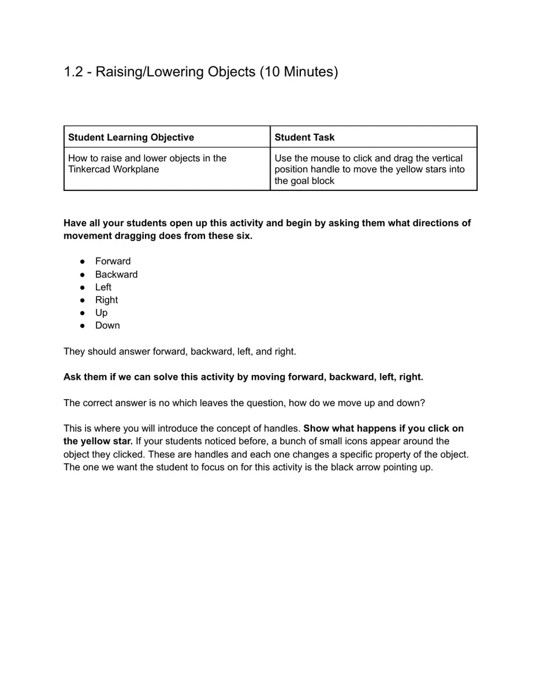
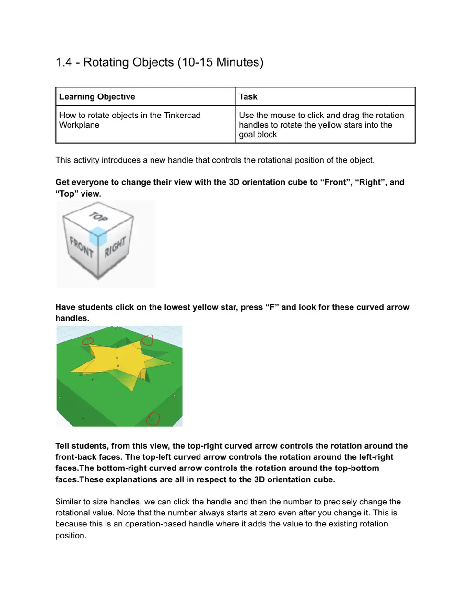
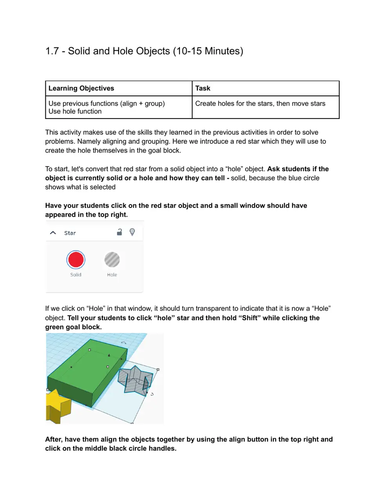
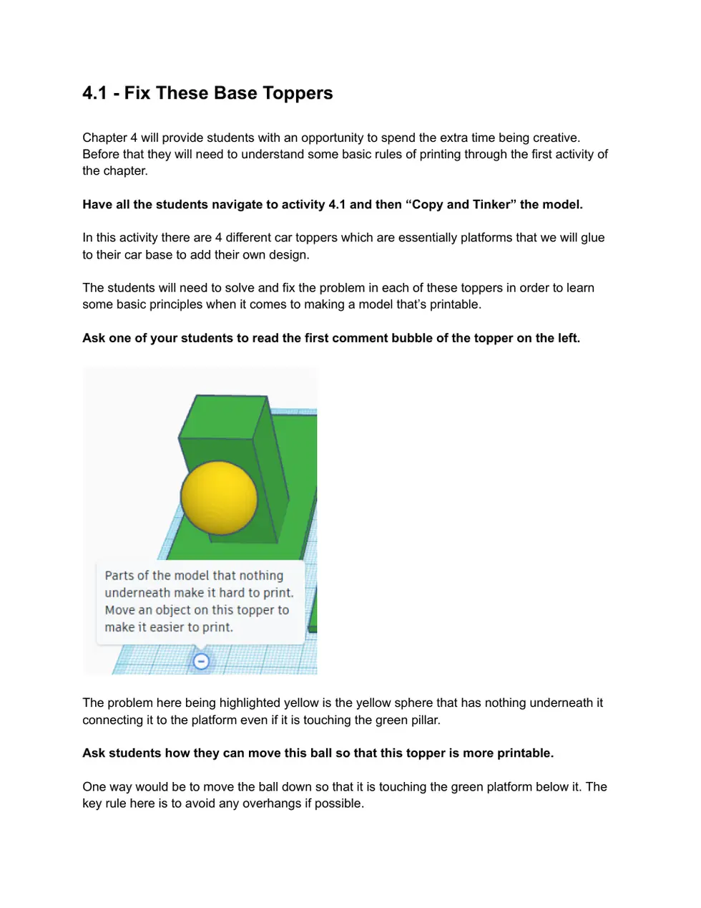
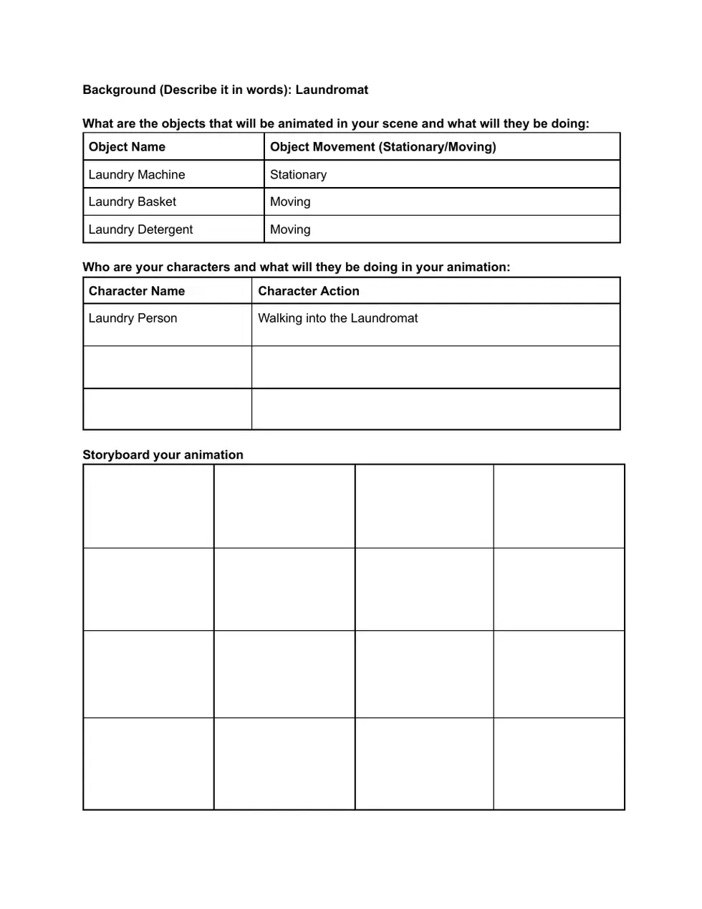
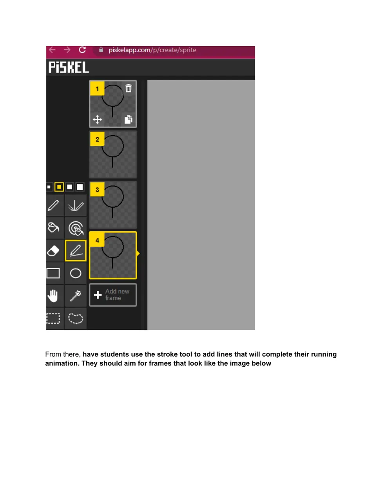

0. Get Ready
15 minutes
Set up your account and folder before you start making things.
Join the Tinkercad class
Do this
- Open the Tinkercad class link.
- Choose Join with nickname.
- Type your first and last name together: no spaces, no capitals.
You are ready when: you can see the class activities page.
Make your project folder
Do this
- Make a folder on the desktop.
- Name it with your first and last name.
- Save every PNG and GIF from this camp there.
You are ready when: your named folder is open and empty.
1. Learn Tinkercad Moves
70-90 minutes
Complete the star-and-goal activities in your Tinkercad class. Each one gives you a new building skill.
Move, lift, and resize
Do this
- Drag a star into its matching green goal.
- Use the black cone to lift or lower it.
- Pull a white square to resize it. Type a number when you need an exact size.
You are ready when: your star fits the goal and you can change its height and size.

The black cone changes height. Drag it up or down.Rotate and look around
Do this
- Use the curved arrows to rotate a shape.
- Try 45, 90, and 180 degrees.
- Use the view cube and press
F to focus on a selected shape.
You are ready when: you can turn a shape to face the right direction.

Use the curved arrows to turn a shape.Line up, join, and cut shapes
Do this
- Drag a box around two shapes to select both.
- Use Align to line them up.
- Use Group to join shapes, or change one shape to Hole to cut it out.
You are ready when: you can make one clean shape with a hole in it.

A hole shape removes material when you group it with a solid.
2. Build a Wrench
75-120 minutes
Use the wrench activity to practice all your shape moves on one printable object.
Finish the wrench activity
Do this
- Open the wrench activity in Tinkercad.
- Build the handle, then the closed end, then the open end.
- Follow each comment bubble and submit the activity when it is complete.
Use the skills from Mission 1: align shapes first, then group them. Make holes before you group.
You are ready when: your wrench is one clean model with both ends finished.
3. Make Derby Parts
60-90 minutes
Now make the pieces that help your derby car roll.
Create an axle
Do this
- Open the axle activity.
- Build the axle by following the activity notes.
- Check that it is straight and grouped before you submit.
You are ready when: your axle is one straight, printable piece.
Create a wheel
Do this
- Open the wheel activity.
- Build the wheel shape.
- Use a hole shape to make space for the axle.
- Duplicate it so you have a matching second wheel.
You are ready when: both wheels have centered holes and match each other.
4. Design a Car Topper
45-90 minutes
Make a small original design that can sit safely on top of your car.
Spot the print problems
Look for this
- Pieces floating in the air.
- Tiny parts that could break off.
- Shapes sticking out past the base.
- Shapes that were not grouped.

Find the parts that are floating, too small, or outside the base.Make your topper
Do this
- Choose one simple idea: an animal, food, robot, logo, or character.
- Build it on the topper base.
- Keep every part touching the base or another part.
- Group the finished model and submit it.
You are ready when: your original topper is one grouped model with no floating pieces.
5. Plan an Animation
30-45 minutes
A tiny plan will make your animation much easier to finish. Keep it simple: one place, one action, one ending.
Make a 3 to 5 panel plan
Do this
- Name your background.
- List the characters or objects that move.
- Draw 3 to 5 boxes showing what changes in each moment.
- Give your animation a clear ending.
You are ready when: another student can look at your boxes and tell what happens.

Your plan can be quick. Show the background, the action, and the ending.
6. Draw Pixel Art
60-90 minutes
Make the art for your animation in UTG Pixel Art Maker. Start big, then add small details.
Draw your background
Do this
- Open the background canvas.
- Fill the whole canvas with a base color.
- Add the biggest shapes first, then details.
- Save it as
background.png in your project folder.
You are ready when: you have a saved background PNG with no characters on it.
Draw moving objects
Do this
- Draw one moving object per image.
- Give each file a clear name, such as
basket.png. - Save each PNG in your project folder.
One object per PNG makes it easy to move that object in the animation.
You are ready when: every moving thing in your plan has its own PNG.
7. Animate Your Scene
90-150 minutes
Use UTG Animator to turn your art into motion. Small moves between frames make smooth animation.
Set up your scene
Do this
- Open UTG Animator.
- Choose Photo to add
background.png. - Choose Add Object for each moving PNG.
- Choose Add Figure or Make Figure for characters.
You are ready when: your background and moving items are visible in one scene.
Make the motion
Do this
- Place the first pose.
- Move one item a tiny amount.
- Add a frame.
- Repeat, then press Play to check it.
Use Ghost last frame to see your previous pose. It helps you make small, even movements.
You are ready when: your animation moves from beginning to ending when you press Play.
Export your GIF
Do this
- Watch your animation one last time.
- Fix any jumpy frames.
- Export a GIF and save it in your project folder.
You are ready when: you can open your GIF and watch the complete animation.
8. Make Game Art
60-120 minutes
Bonus mission: use the same pixel-art skills to customize a simple PixelPad game.
Make your own Dino starter
Do this
- Open the Dino starter.
- Choose See App Page.
- Use Spinoff to make your own copy.
You are ready when: you are working in your own copy of the game.
Replace the game art
Do this
- Draw a new ground, player, or obstacle in Pixel Art Maker.
- Upload the PNG to PixelPad.
- Change the matching sprite filename in the game code.
You are ready when: the game shows at least one piece of art you made.
Make a 4-frame run cycle
Do this
- Draw four poses of the same player.
- Put the poses in a 2 by 2 image.
- Upload the sheet as
runner-sheet.png. - Use the code below to play frames 0 through 3.
# 2 rows, 2 columns, frames 0 through 3
self.spriteSheet = sprite("runner-sheet.png", 2, 2)
set_animation(self, animation(self.spriteSheet, 8, 0, 3))

Change the arms and legs a little in each pose to make a run cycle.You are ready when: your character loops through all four poses in the game.
9. Share Your Work
30 minutes
Finish strong. Put your work in order, then choose one thing you are proud of.
Final check
Make sure you have
- Your submitted Tinkercad wheel, axle, and topper.
- Your pixel-art PNG files in your folder.
- Your exported animation GIF.
- Your PixelPad game changes, if you did the bonus mission.
You are finished when: you can show your files and explain one design choice you made.